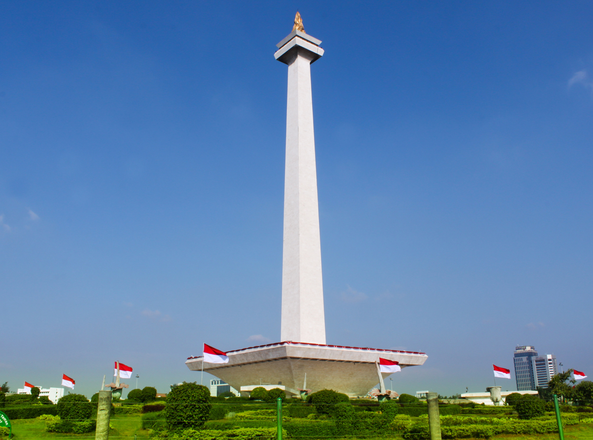

It was called Sunda Kelapa during the Kingdom of Sunda period and Jayakarta, Djajakarta or Jacatra during the short period of the Banten Sultanate. Thereafter, Jakarta evolved in three stages. The "old city", close to the sea in the north, developed between 1619 and 1799 during the era of the VOC. The "new city" to the south evolved between 1809 and 1942 after the Dutch government took over control of Batavia from the failed VOC whose charter expired in 1799. The third was the development of modern Jakarta since the proclamation of independence in 1945. Under the Dutch, it was known as Batavia (1619–1945), and was Djakarta (in Dutch) or Jakarta, during the Japanese occupation and the modern period.

History Of Jakarta
It was called Sunda Kelapa during the Kingdom of Sunda period and Jayakarta, Djajakarta or Jacatra during the short period of the Banten Sultanate. Thereafter, Jakarta evolved in three stages. The "old city", close to the sea in the north, developed between 1619 and 1799 during the era of the VOC. The "new city" to the south evolved between 1809 and 1942 after the Dutch government took over control of Batavia from the failed VOC whose charter expired in 1799. The third was the development of modern Jakarta since the proclamation of independence in 1945. Under the Dutch, it was known as Batavia (1619–1945), and was Djakarta (in Dutch) or Jakarta, during the Japanese occupation and the modern period.
Profile
| Country | : Indonesia |
| Founded | : 22 June 1527 |
| Established as Batavia | : 1619 |
| City status | : 4 March 1621 |
| Province status | : 28 August 1961 |
Government |
|
| Type | : Special administrative area |
| Body | : DKI Jakarta Provincial Government |
| Governor | : Anies Baswedan |
| Vice Governor | : Ahmad Riza Patria |

National Monument (Monas)
The National Monument (Indonesian: Monumen Nasional, abbreviated Monas) is a 132 m (433 ft) obelisk in the centre of Merdeka Square, Central Jakarta, symbolizing the fight for Indonesia. It is the national monument of the Republic of Indonesia, built to commemorate the struggle for Indonesian independence.

Fatahillah Museum
The Jakarta History Museum (Indonesian: Museum Sejarah Jakarta), also known as Fatahillah Museum or Batavia Museum, is located in the Old Town (known as Kota Tua) of Jakarta, Indonesia. The building was built in 1710 as the Stadhuis (city hall) of Batavia. Jakarta History Museum opened in 1974 and displays objects from the prehistory period of the city region, the founding of Jayakarta in 1527, and the Dutch colonization period from the 16th century until Indonesia's Independence in 1945.

Proclamation of Independence Monument
Taman Proklamasi is a park complex located in Central Jakarta, Indonesia. The park is located at the former property of Sukarno at what was known as the house at Jalan Pegangsaan Timur 56. The house, now demolished, is where the Proclamation of Indonesian Independence was first read by Sukarno.
Merdeka Palace
The Merdeka Palace (Indonesian: Istana Merdeka; also known in Indonesian as Istana Gambir and during the Dutch colonial times as Paleis te Koningsplein), is one of six presidential palaces in Indonesia. It is located on the north side of the Merdeka Square in Central Jakarta, Indonesia and is used as the official residence of the president of the Republic of Indonesia.
Me
About
Hi, I'm Yonathan Fanuel Mulyadi, but you can call me Fano, Undergraduate Computer Science's student at Brawijaya University. I love to code and dedicate every program I make to ease things people do, with Faith, Hope, and Love as my life motto. I like new challenges and always trying new things, a hard-working person, and very enthusiastic about everything that I do. I code for approximately 2 years (2022), with 7 programming languages that I mastered, which are Java, Python, HTML, CSS, Javascript, SQL, PHP, I also mastered Figma for UI/UX Design and Adobe Premiere Pro for video editing. My field of expertise will be Front-end Development, Web Development, and UI/UX Designing.My projects could be seen through this GitHub link https://github.com/Fano0612.
Profile
| Name | : Yonathan Fanuel Mulyadi (Fano/Nathan) |
| Birthplace | : Jakarta |
| Country Of Origin | : Indonesia |
| Occupation | : College Student |
| Faculty | : Computer Science |
| Major | : Informatics Engineering |